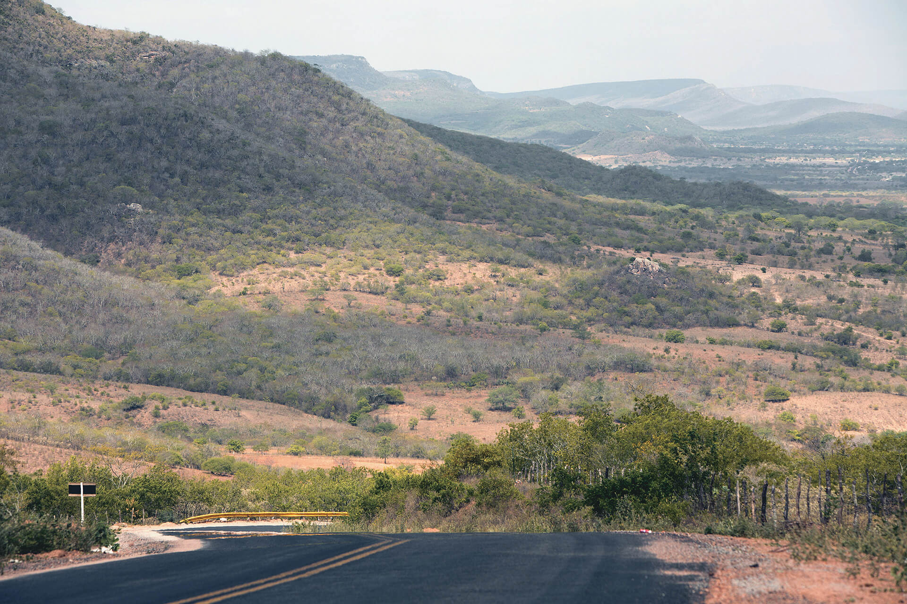
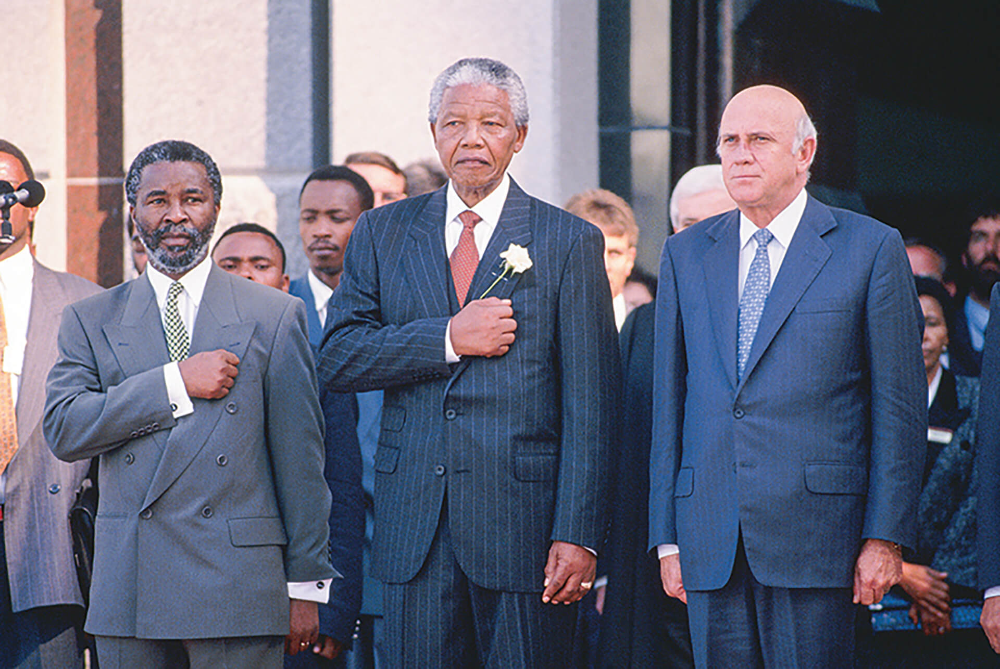
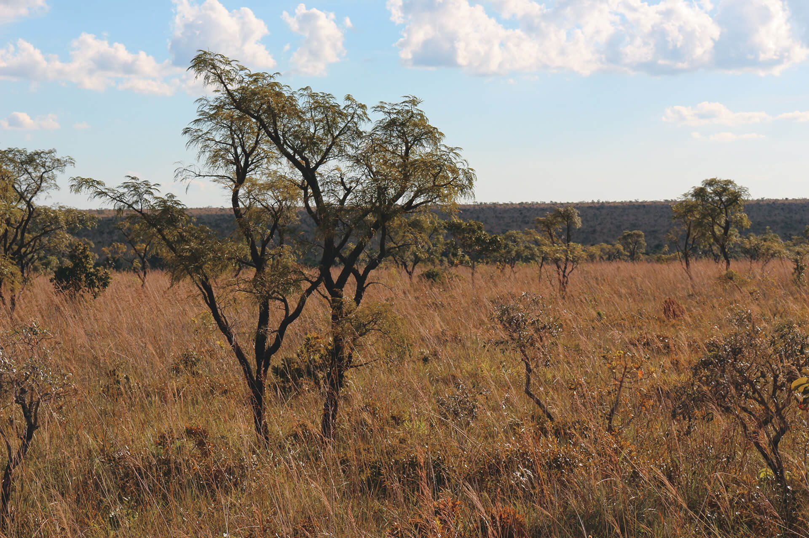
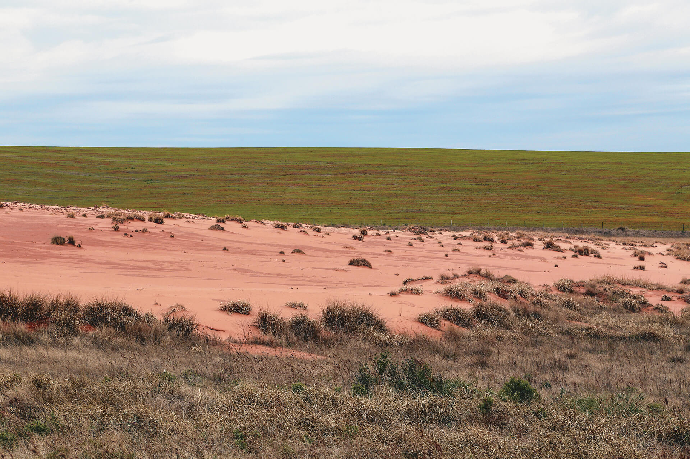
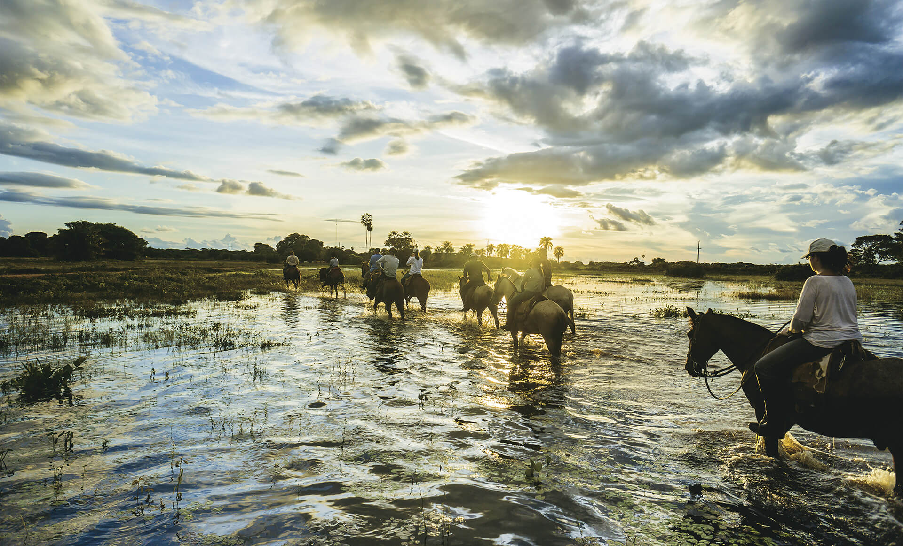

Fontes: PERTHES World Atlas. 2 ed. Gotha: Klett-Perthes Verlag, 2006. p. 50; ATLAS National Geographic: África I. São Paulo: Abril, 2008. v. 9; ATLAS National Geographic: África II. São Paulo: Abril, 2008. v. 10. Adaptação.
Introdução
Observe com atenção o mapa de abertura deste capítulo, que representa os idiomas oficialmente falados nos países dos continentes americano e africano. Em seguida, faça o que se pede.
O que a presença do mesmo idioma em populações de países tão distintos e distantes nos revela a respeito de suas histórias de formação nacional?
Cite três países em cada continente que apresentam dois ou mais idiomas oficiais.
O que a diversidade de idiomas oficiais ou dominantes revela a respeito dessas populações nacionais?
Objetivos
Compreender as similaridades e as diferenças nas formações populacionais dos continentes americano e africano.
Reconhecer o significado histórico e as consequências geográficas do colonialismo para as formações nacionais das populações nos dois continentes.
Compreender as conexões culturais e econômicas que aproximam as populações dos dois continentes e estreitam as relações entre os países.
Compreender as principais características demográficas dos continentes americano e africano.
Como você estudou no capítulo anterior, a população é um dos elementos necessários para a formação de um Estado. Também vimos que se trata de um conceito diferente de povo, pois envolve ainda a questão da identidade entre as pessoas,
denominada nação. A população é, de maneira ampla, a soma de indivíduos em determinada unidade – que pode ser um país ou Estado, mas também pode ser uma cidade, um bairro, uma região e, por que não, um continente. Neste capítulo, vamos
estudar, mais especificamente, as populações que formam os países da América e da África, isto é, as populações nacionais americanas e africanas. Começaremos pelas suas formações para, em seguida, reconhecer as principais
características demográficas de cada continente.
Formação populacional: entre o distanciamento e a proximidade
Como você percebeu na abertura do capítulo, esses continentes compartilham um aspecto comum, presente na história de quase todos os seus países: a experiência da colonização europeia. Essa experiência é o principal fator para explicar
as semelhanças observadas entre os idiomas oficiais ou dominantes nesses países. Afinal, entre o século XVI e meados do século XVIII (na América) ou XIX e meados do XX (na África), quatro antigas potências europeias (Portugal, Espanha,
França e Inglaterra), além de suas concorrentes (Holanda, Bélgica, Alemanha e Itália), administraram, exploraram e exerceram soberania, impondo suas línguas matrizes sobre as populações locais das colônias. Essa imposição, contudo, nem
sempre foi acatada, de forma que outra característica bastante comum em alguns países americanos e, principalmente, nos africanos é a presença de várias línguas nativas faladas por parcelas das populações. Observe as informações do mapa
a seguir.
América e África: diversidade linguística e línguas ameaçadas
Talita Kathy Bora
Fontes: SIMONS, Gary F; FENNIG, Charles D. (Ed.). Ethnologue: languages of the world. 21. ed. Dallas, Texas: SIL International, 2018. Disponível em: <https://www.ethnologue.com/>; PROJETO de idiomas em risco de
extinção.
Disponível em: <endangeredlanguages.com/>; UNESCO World Report Investing in Cultural Diversity and Intercultural Dialogue. United Nations Educational, Cultural and Scientific Organization, 2009. Acesso em: 13 ago. 2018.
Adaptação.
Em razão da dominação colonial, os idiomas dos colonizadores acabaram por se estabelecer como “idioma geral”, falado pela maior parte da população. O mapa demonstra, entretanto, que, apesar de a dominação colonial ter privilegiado os
idiomas oficiais europeus e relegado as línguas nativas a segundo plano, há muitas regiões e países nos quais é comum encontrar pessoas que as mantêm como principal língua e que falam os idiomas dos antigos colonizadores como segunda
língua, ou mesmo que não os falam. Isso ocorre, por exemplo, em Moçambique, na África do Sul e em diversos outros países africanos. Situação semelhante também acontece em países da América Central e regiões da América do Sul, como o
altiplano andino, que abarca partes principalmente do Peru e da Bolívia e onde são muito comuns as línguas nativas quéchua e aimará (e outras de menor difusão), ou a Floresta Amazônica, onde diversas etnias vivem espalhadas por vários
países, entre eles o Brasil.
No povoado rural boliviano da foto, é possível ouvir diálogos quéchua e aimará entre os habitantes nativos.
Observe o mapa da página 3 e localize a região onde você vive. Há alguma língua em risco nas proximidades?
Quais países ou regiões apresentam maior quantidade de línguas ameaçadas no continente americano? E no continente africano?
Quais são os países ou as regiões que apresentam grande diversidade linguística e, ao mesmo tempo, muitas línguas em perigo de extinção? Escolha um desses países e pesquise na internet cinco das principais línguas nativas e três
das que estão em extinção.
Em décadas recentes, tem sido cada vez mais comum que línguas nativas se reafirmem por meio de programações culturais, sendo, inclusive, adotadas oficialmente pelos governos. É o caso, por exemplo, da África do Sul, país que apresenta
11 idiomas oficiais, ou do Peru e da Bolívia, que adotaram o quéchua e o aimará como idiomas oficiais, ao lado do espanhol, além de mais 36 outras línguas nativas no caso da Bolívia. Ou, ainda, o Paraguai, país cuja população em grande
parte fala o guarani com suas variações regionais, mas o governo se comunica historicamente pelo espanhol, realidade que tem passado por transformações nos anos recentes. A esse respeito, leia o texto da página seguinte.
Saiba +
A história de repressão ao guarani no Paraguai. E o esforço para revigorá-lo
Apesar de ter status oficial no país vizinho, idioma ainda é alvo de discriminação e estigma social
Entre os mais de 400 idiomas falados nos países da América do Sul, somente sete são línguas oficiais: espanhol, português, inglês, holandês, aimará, quéchua e guarani. Estas três últimas têm origem indígena.
O aimará e o quéchua predominam no Peru e na Bolívia. Já o guarani é falado sobretudo no Paraguai. Como outras línguas nativas em territórios que vieram a ser colonizados, o guarani foi alvo de perseguição, com punição para quem o
falava em público, exclusão do sistema de ensino e diminuição do número de falantes.
Mas nos últimos anos diversos grupos tentam reavivar o guarani no Paraguai, onde, apesar de mais de 80% da população falar o idioma, ele ainda é atrelado a um estigma social e possui um passado recente de repressão.
O guarani reprimido
Visto como uma língua vulgar e inferior ao espanhol por parte da população ainda hoje, o guarani tem uma longa trajetória de repressão no Paraguai.
A grande maioria dos paraguaios que só falam guarani mora na zona rural. Não dominar o espanhol significa grande chance de exclusão social no Paraguai, com dificuldade de acesso às profissões mais valorizadas.
[...]
O guarani também é falado na Bolívia e no Chile. Em menor escala, em alguns locais do Brasil e da Argentina, com variações linguísticas entre esses diferentes locais.
Com esse passado de repressão e estigma social no Paraguai, o espanhol segue como o idioma predominante nas escolas, no governo, na literatura, na Justiça, nas empresas e na imprensa.
O guarani revalorizado
Em 2011, uma norma, chamada Lei de Línguas, reconheceu definitivamente o guarani como língua oficial do Paraguai, ao lado do espanhol. Desde a Constituição de 1992, o Paraguai era reconhecido como um país bilíngue, certificando o
caráter histórico e cultural do guarani, mas até a Lei de Línguas faltava uma legislação específica sobre o uso de cada idioma. Antes de 1992, o guarani tinha um status inferior ao espanhol. [...]
Junto ao espanhol e ao português, o guarani é uma das línguas oficiais do Mercosul, bloco econômico cujos países-membros efetivos são Brasil, Argentina, Paraguai e Uruguai. O reconhecimento do guarani como idioma usado em órgãos
internacionais do qual o Paraguai faz parte era uma das diretrizes da lei de 2011. [...]
Idioma também na política
Apesar do estigma atrelado ao idioma, há sinais de que a situação está mudando. Alguns grupos e eleitores têm pressionado figuras públicas nos últimos anos, com o intuito de descobrir quais políticos paraguaios não falam guarani.
Quem não fala costuma virar alvo de críticas. [...]
“Os políticos se sentem pressionados porque agora sabem que quem não falar a língua do povo [guarani] está longe do povo”, disse María Gloria Pereira, tradutora das tirinhas da personagem Mafalda para o guarani e integrante da
Academia da Língua Guarani, em entrevista ao jornal americano The New York Times.
PIMENTEL, Matheus. A história de repressão ao guarani no Paraguai. E o esforço para revigorá-lo. Disponível em:
<https://www.nexojornal.com.br/expresso/2018/01/13/A-hist%C3%B3ria-de-repress%C3%A3o-ao-guarani-no-Paraguai.-E-o-esfor%C3%A7o-para-revigor%C3%A1-lo>. Acesso em: 16 ago. 2018.
Além da diversificação de idiomas não oficiais em certas regiões e das semelhanças linguísticas observadas por conta do passado comum de colonização, há outro aspecto histórico que fornece uma conexão ainda mais direta entre as
populações desses continentes: as próprias pessoas. Durante o período colonial, europeus dominaram ambos os continentes e os ocuparam, deixando muitos descendentes. Por séculos, praticaram o comércio de africanos escravizados e trazidos
à força (algo atualmente inaceitável), o que acabou por promover forte miscigenação no continente americano entre americanos nativos, europeus e nativos africanos, gerando descendentes mestiços desses grupos.
Observe o mapa que representa os principais deslocamentos populacionais intercontinentais entre os séculos XVI e XX.
Principais fluxos migratórios entre os séculos XVI e XX
Marilu de Souza
Fonte: CHANDA, Nayan. Sem fronteira: os comerciantes, missionários, aventureiros e soldados que moldaram a globalização. Rio de Janeiro: Record, 2011. p. 305. Adaptação.
Como você pôde observar, no período representado, a América foi o destino predominante de migrantes europeus, que também migraram em menor proporção para outros continentes, e dos migrantes africanos, grande parte deles deslocada
forçadamente como escravizados. Não por acaso, muitos dos países são atualmente marcados pela influência africana, que se manifesta em diversos aspectos, como ritmos e danças típicas, algumas tradições religiosas, culinárias, técnicas
agrícolas, entre outras.
Manifestação cultural de matriz africana colonial miscigenada com influências hispânicas.
Tradicional dança do congo em Portobelo, Panamá, 2015
O colonialismo pode ser entendido como o sistema internacional de relações econômicas que vigorou em diferentes partes do mundo desde o século XV até meados do século XX quando, nas décadas que se seguiram à Segunda Guerra Mundial,
entrou em decadência. Atualmente sobraram poucos locais no mundo em situação parecida à das antigas colônias, geralmente ilhas ou pequenos territórios. Um deles é a Guiana Francesa, vizinha do Brasil, que faz fronteira com o estado do
Amapá, ao norte. Entretanto, de modo muito diferente da condição das colônias no auge do colonialismo no mundo, caracterizado pela relação de subordinação entre uma metrópole e sua colônia, a Guiana Francesa é atualmente considerada um
território ultramarino da França, seus habitantes são cidadãos franceses e, embora haja alguns movimentos que reivindiquem a independência, trata-se de uma região estável em suas relações com a capital, Paris.
Glowimages/AFP/Pedro França
Ponte Binacional do Oiapoque, 2014
Com 378 metros de extensão entre o Amapá e a Guiana Francesa, a Ponte Binacional do Oiapoque faz conexão entre o Brasil e esse departamento ultramarino da França, remanescente de suas antigas colônias.
Como você deve ter percebido, há muitas diferenças entre os processos coloniais que ocorreram na América e na África. A começar pelo período de cada um, vários outros aspectos distinguiram as experiências coloniais de cada continente.
Observe o quadro comparativo abaixo:
Aspectos do colonialismo na América
Aspectos do colonialismo na África
Auge: séculos XV a XIX.
Consequências demográficas visíveis: extinção de muitas comunidades nativas, chegada de estrangeiros, miscigenação destes com a população local e com os demais estrangeiros.
Principais potências internacionais: Portugal, Espanha e Inglaterra.
Economia internacional: vivia a fase do mercantilismo, caracterizada pela aquisição de lucros por meio de compra e venda de produtos, a maioria deles acessíveis somente às elites e produzidos, muitas
vezes, por meio de trabalho escravo.
Derrocada do sistema na América, nas primeiras décadas do século XIX, antecede sua ascensão na África, nas décadas finais do mesmo século, mas com novo formato e contexto.
Auge: séculos XIX e XX.
Consequências demográficas visíveis:antes do século XIX, enquanto na América chegavam africanos e europeus, na África ocorria uma grande subtração da população produtiva; a partir do século XIX, divisões
étnicas são acentuadas por privilégios concedidos pelas administrações das colônias a alguns grupos e por fronteiras coloniais que depois se tornariam nacionais.
Principais potências internacionais: Inglaterra e França.
Economia internacional: vivia a fase do capitalismo industrial, caracterizada pela produção e pelo consumo de massas de mercadorias produzidas com trabalho assalariado.
Em razão dessas diferenças, é muitas vezes denominado neocolonialismo.
Descolonização e formação dos Estados
Com exceção da Etiópia e da Libéria, todos os países americanos e africanos foram fundados por processos de descolonização, quase sempre violentos. Na maior parte das vezes, a independência só foi conseguida por meio de guerras
envolvendo exércitos das metrópoles contra as forças coloniais.
No que diz respeito à África, esse processo ocorreu há aproximadamente meio século, a maioria dos casos na década de 1960 ou, em menor proporção, na de 1950. Sob forte influência dos eventos decorrentes do fim da Segunda Guerra
Mundial, líderes africanos, geralmente educados nas metrópoles europeias, cada vez mais passaram a exigir independência e conseguir apoio popular.
No plano externo ao continente africano, as duas superpotências da Guerra Fria, os Estados Unidos e a União Soviética, não tinham colônias e, portanto, davam apoio a movimentos de independência, visando angariar novos aliados entre os
Estados nascentes. Muitas vezes forneciam apoio militar, ensejando guerras de independência contra as metrópoles e, posteriormente, guerras civis entre grupos internos pelo poder. Esse cenário se repetiu, com variações locais, em muitos
países, e ainda hoje é alvo de disputas.
Já na América, a descolonização ocorreu, primeiramente, nas 13 colônias inglesas, que passaram a se chamar Estados Unidos da América a partir de 1776, em meio a uma guerra de independência que havia começado em 1775 e se estenderia até
1783. Alguns anos depois, enquanto os Estados Unidos expandiam seu território independente para o Oeste, uma revolta de escravos iniciada em 1791 na ilha de Santo Domingo, metade colonizada pela França e metade pela Espanha, expulsou os
colonizadores franceses e declarou-se independente em 1804, dando origem ao Haiti (a outra metade da ilha se tornaria a República Dominicana em 1844).
Embora fosse uma época de comunicação muito mais lenta do que estamos acostumados, os relatos desses eventos se espalharam por todo o continente, promovendo expectativas de independência entre os líderes das colônias, assim como
revoltas populares dos escravizados. Na Europa, o imperador francês Napoleão Bonaparte conduziu uma série de guerras entre 1803 e 1815, enfraquecendo as monarquias espanhola e portuguesa. Chegou a aprisionar a Família Real da Espanha
entre 1808 e 1814, deixando as colônias hispânicas sem autoridade soberana plena no período. Isso favoreceu disputas entre líderes locais e regionais que, posteriormente, se voltariam contra a coroa quando esta visava recuperar seu
domínio, o que originou várias repúblicas. Estas, aos poucos, foram abolindo a escravidão, uma a uma.
O caso do Brasil difere dos demais, pois a Família Real portuguesa escapou de Napoleão ao se mudar para o Brasil em 1808, onde permaneceu por mais de uma década. Apesar de ter havido inúmeros conflitos por independência ou separatismo,
em 1822 Portugal cedeu a independência à Colônia de maneira negociada, instaurando uma monarquia com sistema parlamentarista incipiente. Esta levaria muitas décadas para abolir a escravidão, somente em 1888.
Este cenário, de independência negociada entre colônia e metrópole, seguido de um governo monárquico constitucional, só se repetiria com o Canadá, em 1867, porém sem a mancha da escravidão, já então abolida.
América e África: descolonização

Talita Kathy Bora
Fontes: ATLAS histórico escolar. 8. ed. Rio de Janeiro: MEC/Fename, 1991. p. 65-70. HUGON, Philippe. Geopolítica da África. Rio de Janeiro: Editora FGV, 2009. p. 168. Adaptação.
Cartografar
Quais foram os últimos países da América a se tornarem independentes?
O último país da África a se tornar independente foi o Sudão do Sul, mas não era uma colônia até então. Pesquise na internet e resuma o processo de independência desse país.
Compare o mapa da página 13 com o mapa a seguir. Que relações é possível perceber entre eles?
América e África: línguas oficiais ou dominantes
Marilu de Souza
Fontes: PERTHES World Atlas. 2 ed. Gotha: Klett-Perthes Verlag, 2006. p. 50; ATLAS National Geographic: África I. São Paulo: Abril, 2008. v. 9; ATLAS National Geographic: África II. São Paulo: Abril, 2008. v. 10.
Adaptação.
Conexões étnicas e culturais
O Brasil, por ser o país não africano com maior população afrodescendente no mundo, não poderia deixar de apresentar muitas similaridades e influências africanas na cultura popular do país, das quais são exemplos famosos os movimentos
da capoeira ou os ritmos musicais como o samba e tantos outros. Essa realidade, entretanto, repete-se em maior ou menor grau também em outros países americanos, principalmente nas ilhas do Caribe, nos Estados Unidos e, em menor
proporção, em alguns países de colonização espanhola, como Colômbia e Equador.
Grupo de capoeira, atividade mundialmente famosa, que mistura dança e luta, criada por africanos e seus descendentes no Brasil, apresenta-se em São Paulo, SP, 2017
Glowimages/imagebroker/Florian Kopp
Comunidade afrodescendente de La Loma, Equador, em 2012
Das maiores influências que a descendência africana legou para as populações americanas, as mais conhecidas provavelmente se deram no campo cultural, em especial a música estadunidense. Ritmos hoje mundialmente famosos, como o
blues e
o jazz, têm suas origens nas manifestações musicais dos afrodescendentes. Muitas vezes denominadas black music, ou, em português, música negra, essas manifestações culturais influenciaram músicos do mundo inteiro. Em
meados do século
XX, músicos negros revolucionaram a música popular do país e, posteriormente, do mundo, criando novos ritmos e estilos misturados. Entre as manifestações culturais mais famosas estão o rock’n’roll, que inclui também elementos
rurais não
africanos, como o country music, e a cultura urbana do hip-hop. Esta, com forte influência dos afrodescendentes caribenhos, deu origem ao gênero musical rap, a danças de rua conhecidas como street
dance, aos DJs (disc jockey, operadores
de discos) e à prática artística do grafite, desenhos urbanos feitos em estilo próprio.
Apresentação de street dance em festival de hip-hop, movimento cultural criado por afrodescendentes nos Estados Unidos. Rio de Janeiro, RJ, 2015
Fotoarena/André Horta
Saiba +
Conexões urbanas: afro-americanos retornam à África
Entre as diferentes reações que o Período Colonial ocasionou nos continentes americano e africano, também podemos encontrar aspectos inusitados, como o caso dos “retornados” ou “regressos” – cidadãos afro-americanos que, por razões
diversas, retornaram à África no século XIX e início do XX. Esses casos deixaram exemplos de aspectos ainda hoje singulares na população e na arquitetura urbana em algumas partes do continente. Vejamos dois deles:
Libéria – quando ex-escravizados formaram um país, porém com muitas dificuldades
A Libéria apresenta uma formação populacional peculiar, mesmo para os padrões africanos ou americanos. O país foi fundado como Estado soberano ainda em 1847, quando a maior parte do continente não contava com um Estado (no sentido
moderno do termo, visto no capítulo anterior). Seu surgimento está relacionado à libertação de escravizados em partes dos Estados Unidos, o que motivou alguns grupos a retornar ao continente nativo para construir um novo país, com
auxílio da Sociedade Americana de Colonização, grupo abolicionista criado com esse intuito. Juntamente com os nativos locais, fundaram a Libéria, país cujo nome, não por acaso, remete à palavra liberdade.
Apesar desse início promissor, a história a seguir seria mais complexa, e muitos problemas surgiram: a população ficou dividida entre os nativos e os retornados da América; a Sociedade Americana de Colonização, com muitos
ex-proprietários de escravizados entre seus apoiadores, foi acusada de visar à redução da presença de negros no país (EUA); houve casos de escravização praticada por políticos e ex-escravizados na década de 1920; o sistema político,
marcado pelo bipartidarismo nas décadas iniciais, logo seria dominado por um único partido, que governou por mais de 100 anos, de 1878 a 1980, sem sair do poder; vários golpes de Estado e conflitos civis têm se sucedido no país
desde a década de 1980.
Em 2017, um novo líder ascendeu à presidência do país: o ex-jogador de futebol George Weah. Considerado um dos melhores do mundo na década de 1990, quando atuou em clubes europeus, o ex-atleta fez curso de gestão na Europa e sempre
mostrou preocupação social, despertando esperança de melhorias para os anos seguintes.
Agudás – africanos no Brasil que se tornaram brasileiros na África
Em meados do século XIX, a partir da década de 1830, houve grande fluxo de pessoas, embarcações e mercadorias entre o litoral da Bahia e a costa africana dos atuais países Nigéria, Benin e Togo. Essa região havia sido conhecida
como Costa dos Escravos e, em razão da atuação inglesa no combate ao tráfico negreiro, deixou essa condição para se converter em um protetorado inglês livre da escravidão. Muitos brasileiros afrodescendentes e africanos libertos que
haviam passado boa parte da vida escravizados no Brasil, além de portugueses e comerciantes brasileiros brancos, se instalaram nessas áreas, formando parte significativa das populações de algumas cidades, inclusive bairros com
características arquitetônicas próprias. Atualmente, seus descendentes formam comunidades conhecidas como agudás, que se distinguem do restante da população por hábitos, vestimentas e religiosidade.
Glowimagens/AFP/Yanick Folly
Arquitetura colonial brasileira/portuguesa em Porto Novo, no Benin, 2016, por influência da comunidade de agudás da região
Principais características demográficas da América
Somando pouco mais de um bilhão de habitantes ao todo, o continente americano é o que apresenta maior extensão latitudinal. Esse fator geográfico tem consequências demográficas no continente.
No que se refere à distribuição da população pela América, como você pôde observar no planisfério da página 6 do capítulo anterior, as áreas no extremo sul são pouco povoadas, mas ocupam uma porção relativamente pequena do continente,
enquanto no extremo norte há vastas áreas cobertas por gelo e, consequentemente, população escassa. Dessa maneira, não surpreende que, se excetuarmos o México, as áreas da porção setentrional do continente apresentem baixa densidade
demográfica geral, por volta de 19 habitantes por quilômetro quadrado. Essas áreas compreendem, além dos Estados Unidos e do Canadá, as ilhas de São Pedro e Miquelão, que pertencem à França, Bermuda, que pertence ao Reino Unido, e
Groenlândia, que, como vimos no infográfico da página 19 do capítulo anterior, faz parte da Dinamarca.
A América Latina, por outro lado, apresenta densidade demográfica de 32 habitantes por quilômetro quadrado, o que tampouco é um valor elevado, e também pode ser explicado, em grande medida, pela presença de áreas de difícil ocupação
humana. Além da região da Patagônia, no extremo sul do continente, a Cordilheira dos Andes, por conta da elevada altitude, e a Floresta Amazônica, em razão da densa vegetação e elevada umidade, impõem condições difíceis para a ocupação
humana e a exploração econômica, ainda que sejam mais propícias que o frio congelante dos extremos norte e sul do continente.
Com exceção desses extremos, a população está mais fortemente concentrada nas áreas próximo à faixa litorânea ao longo do continente. As grandes cidades, denominadas metrópoles (ou megalópoles, quando há unificação de duas delas ou
mais), representam os mais elevados níveis de densidade demográfica. Por se apresentarem como locais com oferta de empregos e possibilidades de estudos ou empreendimentos, as grandes cidades concentram oportunidades para grande parte da
população. Entretanto, aglomerações de pessoas sem a infraestrutura urbana apropriada muitas vezes têm intensificado problemas sociais, como moradias precárias, concentração de pobreza, altos índices de criminalidade e violência. Esta
tem se destacado nos últimos anos, pois atingiu níveis alarmantes em muitos países, inclusive nos Estados Unidos.
Uma maneira de medir se os países são mais ou menos pacíficos é consultar o Índice de Paz Global, calculado pelo Instituto para Economia e Paz (IEP – Institute for Economics and Peace). Com base em dezenas de indicadores, esse
índice
compara mais de 160 países em três áreas principais: segurança e proteção; militarização; e participação em conflitos internos e externos. Observe esse aspecto do continente americano no infográfico da página seguinte, que mostra também
dados demográficos e uma regionalização do continente.
Vista panorâmica da capital mexicana, Cidade do México, uma das maiores cidades do mundo, 2014
Fotoarena/Alamy/travelstock44
América: demografia, Índice de Paz Global e regionalização
Marilu de Souza
América do Norte (exceto México)
População (2017): 361 milhões.
Densidade populacional: 19 hab./km².
Crescimento anual: 0,7%.
Fecundidade (média de nascimentos para cada mulher entre 15 e 49 anos): 1,9.
Expectativa de vida ao nascer: 79 anos.
Área mais desenvolvida economicamente, apresenta índices sociais melhores que os do restante do continente. Apesar disso, os Estados Unidos, principal polo político e econômico da região e do mundo, exibem índices de violência
relativamente elevados, em especial se comparados aos do Canadá. O nível de desigualdade também tem se mostrado de difícil melhoria nos últimos anos.
América Central + México
População (2017): 177 milhões.
Densidade populacional: 72 hab./km².
Crescimento anual: 1,5%.
Fecundidade (média de nascimentos para cada mulher entre 15 e 49 anos): 2,4.
Expectativa de vida ao nascer: 76 anos.
Região com densidade demográfica relativamente alta e territórios pequenos, exceto o México. Embora esse país seja o principal polo político e econômico da região, constituída por um istmo, ou seja, uma passagem estreita
conectando duas grandes áreas, os países da América Central têm suas economias fortemente dependentes dos Estados Unidos.
América do Sul
População (2017): 424 milhões.
Densidade populacional: 24 hab./km².
Crescimento anual: 1,0%.
Fecundidade (média de nascimentos para cada mulher entre 15 e 49 anos): 2,0.
Expectativa de vida ao nascer: 75 anos.
Porção do continente marcada pela presença de grandes áreas naturais, como a Cordilheira dos Andes, a Floresta Amazônica e a Patagônia, o que explica, em grande medida, a baixa densidade demográfica. Os principais polos
políticos e econômicos são o Brasil e, em menor medida, a Argentina.
Caribe
População (2017): 43 milhões.
Densidade populacional: 194 hab./km².
Crescimento anual: 0,7%.
Fecundidade (média de nascimentos para cada mulher entre 15 e 49 anos): 2,3.
Expectativa de vida ao nascer: 72 anos.
Países insulares, ou seja, compostos de ilhas, onde há alta densidade populacional. Há presença considerável de afrodescendentes na população e forte dependência econômica das atividades turísticas.
Fontes: INSTITUTE FOR ECONOMICS AND PEACE. Global Peace Index 2017 – measuring peace in a complex world. Disponível em: <http://visionofhumanity.org/app/uploads/2017/06/GPI17-Report.pdf>; UNITED NATIONS. World
Population 2017. Department of Economic and Social Affairs. Population Division. Disponível em: <https://esa.un.org/unpd/wpp/Publications/Files/WPP2017_Wallchart.pdf> Acesso em: 13 set. 2018. Adaptação.
Estruturas etárias das populações americanas
Por se tratar de um continente com tantas variações econômicas, socioculturais e ambientais entre os países, é de se esperar que as populações americanas apresentem diferentes perfis em suas pirâmides etárias, isto é, na estrutura da
população por faixas de idade, denominada estrutura etária.
Uma das tendências mais visíveis dos países de economia mais desenvolvida, com nível muito alto de IDH, é a constituição de famílias menores, em que a quantidade de filhos é pequena, geralmente um ou dois, e o casamento ocorre em
idades mais avançadas – entre outras razões porque as mulheres tendem a se dedicar às suas carreiras profissionais antes da maternidade. Consequentemente, esses países em geral apresentam populações mais velhas, isto é, populações nas
quais as camadas mais idosas da população representam grande parcela dos indivíduos. Essas características podem ser deduzidas com base em uma análise da pirâmide etária canadense, exposta abaixo. Observe-a e repare em seu formato, que
já não se parece muito com o que seria uma pirâmide, uma vez que a base, constituída pela população mais jovem, é mais estreita que as faixas de idade adulta mais avançada, que ficam na parte superior do gráfico.
Situação oposta ocorre nos países mais pobres, ou aqueles que exibem menores índices de IDH. Para entender melhor, observe novamente o planisfério do IDH na próxima página, encontre a Bolívia e o Haiti, verifique sua classificação em
relação ao IDH e veja a pirâmide etária desses países. Por fim, há os países em situação intermediária, como o México, que você pode conferir abaixo, a Argentina ou o Brasil.
Canadá, Bolívia, Haiti e México: pirâmides etárias
Fonte: UNITED NATIONS. World population prospects: the 2017 revision. Disponível em: <https://esa.un.org/unpd/wpp/Publications/Files/WPP2017_Volume-II-Demographic-Profiles.pdf>. Acesso em: 20 abr. 2018.
Olhar geográfico
Observe a classificação desses países, mais os Estados Unidos e o Brasil, em relação ao índice de paz, no infográfico da página 21, e compare-os com o IDH, no planisfério a seguir.
Índice de Desenvolvimento Humano (IDH) por país – 2016
Talita Kathy Bora
Fonte: PNUD (Programa das Nações Unidas para o Desenvolvimento). Disponível em: <http://hdr.undp.org/en/countries>. Acesso em: 13 mar. 2018. Adaptação.
Quais casos permitem concluir que não é possível estabelecer uma relação automática entre os níveis de IDH e de índice de paz dos países? Justifique sua resposta.
Principais características demográficas da África
Com cerca de 1 bilhão e 256 milhões de pessoas, o continente africano tem sua população distribuída de maneira bastante desigual, conforme você pôde verificar no mapa da página 6 do capítulo anterior. O crescimento populacional médio,
entretanto, é de 2,6% ao ano, o maior entre os continentes da Terra, o que deverá aumentar a densidade demográfica média do continente, atualmente de 42 habitantes por quilômetro quadrado, nas próximas décadas. Observe os gráficos para
compreender.
População: crescimento (2000-2100)
Fonte: UNITED NATIONS. World population prospects: the 2017 revision. Volume II – demographic profiles. Disponível em: <https://esa.un.org/unpd/wpp/Publications/Files/WPP2017_Volume-II-Demographic-Profiles.pdf>.
Acesso em: 16 ago. 2018.
Como podemos ver, embora o crescimento demográfico do continente tenda a ser menor nos próximos anos, como indica o gráfico anterior, sua população absoluta, isto é, a somatória total dos indivíduos do continente, deve continuar
aumentando nas próximas décadas, conforme mostram os gráficos abaixo. Essa tendência não deve ser interpretada como algo necessariamente ruim ou bom, pois se trata de uma realidade com muitos aspectos. Por um lado, o fato de o
continente manter-se relativamente jovem, se comparado aos demais, pode impulsionar o potencial produtivo das economias, por exemplo. Por outro lado, impõe o desafio do crescimento econômico elevado para empregar a juventude do
continente com boas oportunidades de trabalho e empreendimento, evitando problemas históricos dos jovens africanos, como o desemprego e a migração.
População mundial (1950-2100)
Fonte: UNITED NATIONS. World population prospects: the 2017 revision. Volume II – demographic profiles. Disponível em: <https://esa.un.org/unpd/wpp/Publications/Files/WPP2017_Volume-II-Demographic-Profiles.pdf>.
Acesso em: 16 ago. 2018.
África: população por região (1950-2100)
Fonte: UNITED NATIONS. World population prospects: the 2017 revision. Volume II – demographic profiles. Disponível em: <https://esa.un.org/unpd/wpp/Publications/Files/WPP2017_Volume-II-Demographic-Profiles.pdf>.
Acesso em: 16 ago. 2018.
Na última década, o continente tem superado a média mundial nesse quesito, o que desperta boas esperanças de melhorias no futuro; porém, é preciso aliar o crescimento da economia africana com transformações tecnológicas, políticas e
administrativas. Como veremos no próximo capítulo, a migração do campo para a cidade tem gerado processos de urbanização muitas vezes descontrolados, que estão no centro dessa demanda por melhor planejamento e prestação de serviços por
parte dos Estados.
Embora seja bastante comum associar a imagem do continente africano a baixos índices sociais, conflitos armados e natureza exuberante, esses aspectos são parciais e não representam a totalidade dele. Como você pôde observar no
planisfério da página 23, há no continente diferentes níveis de educação, saúde e pobreza, os indicadores básicos que compõem o IDH. Na verdade, no decorrer do século XX e, particularmente, desde a década de 1990, o continente como um
todo tem apresentado crescimento constante nesse índice. Embora o IDH africano ainda mostre patamar relativamente baixo, está em ascensão, sendo possível identificar fases e processos semelhantes no histórico do IDH dos demais
continentes, o que faz muitos analistas acreditarem que o subdesenvolvimento nos países africanos pode ser superado nas próximas décadas. Essa convicção é reforçada por alguns exemplos de países que, nos últimos anos, apresentaram
sinais animadores de melhorias.

Getty Images/CORBIS SABA/Louise Gubb
O líder sul-africano Nelson Mandela (ao centro), eleito primeiro presidente negro da África do Sul em 1994, quando deu fim ao regime racista que operava no país sob o nome de apartheid, difundiu esperanças de novos tempos de paz
entre os sul-africanos. Embora o país tenha apresentado dificuldades econômicas e políticas, tem conseguido superar de maneira pacífica e democrática os problemas sociais envolvendo rivalidades étnicas.
Tendências regionais em níveis de Índice de Desenvolvimento Humano (IDH)

Fonte: UNITED NATIONS DEVELOPMENT PROGRAMME (UNDP). Human Development Report 2016: human development for everyone. Disponível em: <http://hdr.undp.org/sites/default/files/2016_human_development_report.pdf>.
Acesso em: 16 ago. 2018.
Um dos muitos edifícios modernos de Gaborone, Botsuana, uma das cidades de maior crescimento nos últimos anos e um dos países mais pacíficos e prósperos do continente
No continente africano, como não poderia deixar de ser, a população é muito diversificada entre si, tanto na comparação entre os países quanto na comparação entre regiões de um mesmo país, e mais ainda quando se trata de países em
regiões distintas do continente. Conforme você pôde observar no mapa da página 41 do capítulo anterior, a África pode ser dividida em Norte da África e África Subsaariana, que fica ao sul do imenso Deserto do Saara, marco entre as duas
grandes regiões do continente. Essa última, entretanto, pode ser novamente regionalizada em 4 regiões, cada qual composta de um conjunto de países relativamente próximos não somente em termos territoriais, mas também em termos naturais
e sociais. Observe o infográfico na página seguinte com atenção.
África: demografia, Índice de Paz Global e regionalização

Talita Kathy Bora
Norte da África
População (2017): 233 milhões.
Densidade populacional: 30 hab./km².
Crescimento anual: 1,9%.
Fecundidade (média de nascimentos para cada mulher entre 15 e 49 anos): 3,3.
Expectativa de vida ao nascer: 71 anos.
Por vezes denominada “África Branca”, em razão de a presença negra ser relativamente menor que no restante do continente, essa região apresenta o árabe como língua predominante e o islamismo como religião principal. Egito se
destaca como polo político-econômico regional.
África Ocidental
População (2017): 371 milhões.
Densidade populacional: 61 hab./km².
Crescimento anual: 2,7%.
Fecundidade (média de nascimentos para cada mulher entre 15 e 49 anos): 5,5.
Expectativa de vida ao nascer: 55 anos.
Região de transição entre o Deserto do Saara e as florestas equatoriais do continente, é rica em recursos minerais e apresenta solos férteis, porém constantes conflitos atrapalham seu desenvolvimento. Nigéria se destaca como
polo político-econômico regional.
África Central
População (2017): 163 milhões.
Densidade populacional: 25 hab./km².
Crescimento anual: 3,1%.
Fecundidade (média de nascimentos para cada mulher entre 15 e 49 anos): 5,9.
Expectativa de vida ao nascer: 57 anos.
Região naturalmente quente, úmida e em boa parte florestada. Historicamente prejudicada pelos conflitos do século XX. Não apresenta polos significativos, sendo Gabão o país cuja população exibe os melhores índices sociais.
África Meridional
População (2017): 65 milhões.
Densidade populacional: 25 hab./km².
Crescimento anual: 1,4%.
Fecundidade (média de nascimentos para cada mulher entre 15 e 49 anos): 2,6.
Expectativa de vida ao nascer: 59 anos.
Região de marcante influência colonial inglesa e portuguesa, é considerada a mais próspera do continente, com destaque para a África do Sul como polo político-econômico regional.
África Oriental
População (2017): 422 milhões.
Densidade populacional: 63 hab./km².
Crescimento anual: 2,8%.
Fecundidade (média de nascimentos para cada mulher entre 15 e 49 anos): 4,9.
Expectativa de vida ao nascer: 61 anos.
Região que abarca desde a borda sul do Deserto do Saara até as savanas tropicais, extremamente heterogênea em termos étnicos e linguísticos. Palco de muitos conflitos, não apresenta polos significativos. Quênia e Zâmbia exibem
populações com melhores índices sociais.
Fontes: INSTITUTE FOR ECONOMICS AND PEACE. Global peace index 2017: measuring peace in a complex world. Disponível em: <http://visionofhumanity.org/app/uploads/2017/06/GPI17-Report.pdf.>; UNITED NATIONS. World
Population 2017. Population division. Disponível em: <https://esa.un.org/unpd/wpp/Publications/Files/WPP2017_Wallchart.pdf>. Acesso em: 16 ago. 2018. Adaptação.
Olhar geográfico
Observe o infográfico da página anterior com atenção e indique, em cada região africana, de quais países você já tinha ouvido falar. Em seguida, registre as respostas.
Observe com atenção o planisfério sobre o IDH e como se configura esse indicador nas cinco regiões africanas. Compare-o com as informações do infográfico da página 28 e escreva um parágrafo com breve síntese do panorama do IDH em
cada região do continente.
Índice de Desenvolvimento Humano (IDH) por país – 2016

Talita Kathy Bora
Fonte: PNUD (Programa das Nações Unidas para o Desenvolvimento). Disponível em: <http://hdr.undp.org/en/countries>. Acesso em: 13 mar. 2018. Adaptação.
De acordo com o Índice de Paz Global, há países africanos mais pacíficos que os Estados Unidos ou mesmo que o Brasil? Consulte os infográficos das páginas 21 e 28 e justifique sua resposta.
Olhar geográfico
Estruturas etárias das populações africanas
Em relação à estrutura etária das populações africanas, há diferentes perfis de pirâmide etária nos países do continente. Observe uma pirâmide exemplar de cada região.
Tunísia, Botsuana, Costa do Marfim, Etiópia e Angola: pirâmides etárias
Fonte: UNITED NATIONS. World population prospects: the 2017 revision. Disponível em: <https://esa.un.org/unpd/wpp/Publications/Files/WPP2017_Volume-II-Demographic-Profiles.pdf>. Acesso em: 16 ago. 2018.
Como você pode perceber, se compararmos as pirâmides etárias com os dados de IDH da página anterior e as informações do infográfico da página 28, há certa correlação entre o formato das pirâmides e o nível do IDH nacional, uma vez que
a pirâmide etária da Tunísia e a de Botsuana, países de IDH mais elevado que os outros três, se apresentam em formato menos triangular. Ou seja, com camadas mais jovens ainda representando parcela relativamente grande da população,
porém com faixas etárias adultas também expressivas, indicando um processo de envelhecimento em curso. Já Costa do Marfim, Etiópia e Angola apresentam estruturas etárias clássicas de países menos desenvolvidos em termos socioeconômicos,
com grande quantidade de crianças e jovens e proporções cada vez menores à medida que se avançam as faixas etárias, delineando o formato de uma pirâmide típica, com base larga e topo cada vez mais estreito.